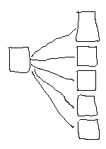
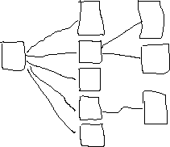
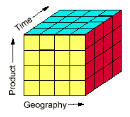

| LevSelector.com |
Data Warehousing,
OLAP & Reporting.
| On This Page: | Other Pages: |
| - Operations vs. Analysis
- Star & Snowflake configurations - data mart & data warehouse - multi-dimentional analysis, OLAP - software - books |
- MDX (Multi-Dimensional
Expressions) - Informatica - ERP, CRM, etc. - ETL - Teradata |
(Executive Information Systems, Decision Support Systems, Statistics and Technical Data Analysis, Neural Networks, End-User Query and Reporting, Data Warehousing, Mapping and Visualization, Data Mining and OLAP, )
| Operations vs Analysis | home - top of the page - |
Let's distinguish between databases optimized for 2 types of work: operations
and research.
| -- | operational processing - OLTP(On-Line-Transaction-Processing) | Research and Analysis - DSS (Decision Support System), OLAP (On-Line-Analytical-Processing), Data mining |
| Optimized for | inserts, updates, and deletes | queries |
| Frequency of updates | Frequently (may be every second) | Usually once a day. Data for analysis is prepared once a day (at night) at a staging area, then loaded into the main OLAP database - and then used during the day. |
| Number of indexes | Few indexes | Many indexes |
| Level of normalizing the database | Normalized to some reasonable degree | Heavily de-normalized for easier and faster querying |
Some analysis (for example, Multi-Dimensional Analysis) is really much better done using specialized software instead of standard RDBMS.
| Star schema & Snowflake configurations | home - top of the page - |
One of the difficulties of querying a normalized database is in the big number of tables you may need to join sequentially in one query. You can easily have to chain 10 and more tables. This is difficult for a user (he must know his tables really well), and it may have very poor performance. Or even crash the database.
| Star Configuration | Snow Flake Configuration | |
|  |  |
The Star Schema is also known as a "star-join schema", "data cube", and "multidimensional schema".
The main benefit of Star schema configuration is that it makes easy for users to to make reports/queries, especially implementing multi-dimensional views of data with different granularity for different dimensions. The applications (reports) become simplier and easier to understand for the user.
To optimize queries, it is necessary to create corresponding indexes. For example, for a report using data from 4 dimensions (d1,d2,d3,d4) you may use the following index:
create index i1 on MyFactTable (id_d1, id_d2, id_d3, id_d4)
Database servers may have special built-in optimizations to perform a query on a star schema. For example, in Oracle you can set STAR_TRANSFORMATION_ENABLED=TRUE and create bitmap indexes on keys in the fact table.
Fact table is usually very big (tens of millions of rows - and larger) and gets more and more new data on a daily basis. It make sense to partition it by some time interval, for example by a month or quater of the year. To do this you need to add a column to the fact table (for example, month) by which you will do the partitionning.
There are ways to bulk-load data in parallel - methods are different depending on the database brand (DB2, Oracle, ...). For example, for speed you can disable indexes and logging while doing the load - and then recreate the indexes after the load. Note - as rebuilding of an index for a big table takes a lot of time, there are ways to speed up this as well (partition the index, thus rebuilding index locally, use parallel calculations, turn off logging while rebuilding the index).
| Data Mart & Data Warehouse | home - top of the page - |
Data mart is usually a set of partiular data designed to meet some specific knowledge needs. It may be one set of tables in Star or Snowflake configuration. But may be something else. A big database with thousands of tables can be represented (for analysis) by tens of Data Marts. Together these Data Marts constitute a "Data Warehouse".
Note, that several different star systems can re-use the same dimension
tables.
| Multi-Dimensional Analysis | home - top of the page - |
Example
- 4 dimensions: stores, time periods, products, measures.
Thus data relationships can not be fit in a 2-dimentional table. It
is more like a multi-dimensional cube (hyper-cube).
You can slice this cube in different directions - and show a 2-dimensional
slice (or 3-dimensional picture).
Note, that some of cube dimensions correspond to Dimensions of the
data mart (something you would group by - stores, time periods, products),
whereas others may be calculated measures (total, average, etc.).
Each dimension usually has some hierarchy
- multiple levels of granularity (for
example for time: hour, day, week, month, etc.).
The OLAP existed for ~30 years, but the term OLAP (On-Line Analytical Processing) was introduced only in 1993 by Dr. Codd et al. in paper "Providing OLAP to User-Analysts: An IT Mandate". Yes, the same Codd who formulated database principles in 70s. The work was sponsored by Arbor Software, the creators of ESSBASE.
OLAP calculations should be fast (under 30 seconds).
ROLAP - analysis system based on Relational database.
MOLAP - analysis system using multidimensional database (much
faster).
HOLAP - Hybrid OLAP.
Formulas
Links.
When designing your model, adding hierarchies takes less computer resources than adding dimensions.
Search google for olap freethink, praxis olap software, infocube, oracle
express, etc.
- http://altaplana.com/olap/olap.html
- collection of information related to Online Analytical Processing (OLAP)
- http://www-users.cs.york.ac.uk/~kimble/research/ak/info.html
-
- www.infogoal.com/dmc/dmcdwh.htm
- Directory of Data Warehouse, Data Mining, and Decision Support Resources
- http://bprc.warwick.ac.uk/bp-tool.html
- hardware/software vendors
- www.praxisint.com/solution/businessintelligence/index.asp
- Praxis International (FreeThink)
- www.credata.com/research/dwsites.html
- Hot Sites on Data Warehousing
- http://www.dmreview.com/master.cfm?NavID=152&AuthorID=1573
- OLAP Market Review
- www.dmreview.com/ - DM Review
Magazine
Search Google for OLAP:
- http://directory.google.com/Top/Computers/Software/Databases/OLAP/?tc=1
-
- http://directory.google.com/Top/Computers/Software/Databases/Data_Warehousing/
-
- http://directory.google.com/Top/Computers/Software/Databases/Data_Mining/
-
| software | home - top of the page - |
There are so many specialized software packages for data mining and
OLAP - more than enough to have your head spin. For a sample list go to
- www.knowledgestorm.com/
- and search for OLAP - you will get ~200s of software solutions.
Here are some (not properly sorted, and I am sure that some important ones
are missed - please let me know at - Lev.Selector@gmail.com) :
| - www.businessobjects.com/
- BusinessObjects - powerful reporting
system, a BI (Business Intelligence) platform and integrated BI toolset.
Have designer application, deliver via browser. Has effective and optimized
subscribtion/distribution mechanism. Allows to do multidimensional analysis,
slicing/dicing, drill down/up.
- www.cognos.com/products/powerplay/ - Cognos PowerPlay - by Cognos, Inc. - the world's best-selling OLAP software lets users explore volumes of data with sub-second response. Can use browser or Excel as a client. Has data store and application server to serve thosands of users simultaneously. - Microsoft Analysis Services for MS SQL Server. Took big share of the market. MDX language (Multidimensional Expression (MDX) - like SQL, but works with multidimensional cubes). ProClarity (www.proclarity.com/) offers third party OLAP CLient (Knosys). - www.hyperion.com/ - Hyperion's Essbase OLAP server and Analysis Tools - used by millions of users. - DB2 OLAP server - IBM's Essbase clone, IBM Red Brick® Warehouse - a high-performance database server (from Informix) - http://www.teradata.com - Teradata (spin-off from NCR in 2007) - database engine optimized for Datawarehousing (for reading, not for inserting). Used for huge data warehouses (Fortune 100 companies, for example, major arilines). NCR = National Cash Register. - www.oracle.com/olap/ - Oracle Express - Multidimensional Server (MOLAP), the 4GL SPL (Server Programming Language), Oracle Express Objects toolkit (to handle multi-dimensional data), many utilities for administraiont, monitoring, loading the data, OWB (Oracle Warehouse Builder - ROLAP), Oracle Express Analyzer, Oracle Discoverer, Express Web Publisher, Spreadsheet Add-ins, Oracle Darwin (datamining software that finds meaningful patterns hidden within corporate data), Oracle Financials, etc. - www.crystaldecisions.com - by Crystal Decisions (Former Seagate Software) - web-based infrastructure for analysis and reporting accross the enterprise (Crystal Reports, Crystal Enterprise, Crystal Applications, Crystal Analysis, Holos Analytic System, Seagate Info, BI Technology Spectrum). Simple distribution of pdf reports. - www.applix.com/solutions/ - Applix ITM1 - www.MicroStrategy.com - MicroStrategy - OLAP, etc. - www.brio.com/products/overview.html - Brio Intelligence, Brio Portal, Brio Reports - build business intelligence, enterprise reporting, analytics. Slow performance. Powerful query analyser tool which works over the web (via plugin). Good Javascript model which allows the building of "EIS screens" to give pushbutton / search box / sort etc. without the user having to understand how to use pivottables and drill-down graphs. - www.sap.com/solutions/bi/ - mySAP Business Intelligence, Business Warehouse, etc. - by SAP America, Inc. - www.actuate.com - Actuate - The Actuate e.Reporting Suite 5. Report server for report generation - produces ROI (proprietary format), PDF and spreadsheet. Reports have rich content and can be hyper-linked. Actuate runs on both Unix and NT servers. Example of usage: generate 30,000 reports each night. |
* www.hammerman.com/faq.html
- database reporting FAQ
* www.livewarepub.com/
- R&R Report Writer - Liveware Publishing, Inc. (X-base and SQL versions
(formerly known as Arpeggio))
* www.srs-inc.com/Products/ReportSmith/RSFeatures.asp
- ReportSmith - (Strategic Reporting Systems, Inc.)
| - www.informatica.com/
-
Informatica
- good product for data preparation in the staging area.
- www.whitelight.com/ - WhiteLight analytic platform - www.siebel.com - Siebel eMarketing - by Siebel Systems, Inc. - Siebel eMarketing enables organizations to create, execute, and assess Web-based marketing campaigns. - - ADAPT (Application Design for Analytical Processing Technologies) by Symmetry Corporation - design methodology specifically to represent the objects and operations found in OLAP applications. - - OutlookSoft Enterprise Analytic Portal - by OutlookSoft - - WebFOCUS Business Intelligence Dashboard & Developers studiio - by Information Builders, Inc. - reporting - www.PeopleSoft.com - PeopleSoft Tree and Cube Manager - by PeopleSoft - users can define the data they want to extract into an OLAP cube. - - KPMG's Interpreter - transfer pricing software - by
KPMG LLP
- - DocuAnalyzer - by Mobius Management Systems, Inc.
- - DataTracker - by Silvon Software, Inc. - OLAP
- - IDENTITY SYSTEMS (IDS) - by Search Software America - Persons,
Organizations and Addresses can be searched, matched and retrieved despite
the error, variation or format of the data.
- - WizWhy - by WizSoft, Inc. - a data mining tool for revealing
trends, rules, errors, and interesting phenomena in the data
- - NetWORKS ONEview - by Manugistics, Inc. - a set of applications
based on industry-standard OLAP technology
- - Monarch Data Pump - by Datawatch Corporation - extracts data
from reports and/or database - and passes it further in various formats
- - PROPHIX - by EPS Software - Multi-user financial software
application used for Budgeting, analysis, planning, reporting.
|
| books | home - top of the page - |
Books:
| - Corporate Information Factory, 2nd Edition - by William H. Inmon,
Claudia Imhoff, Ryan Sousa (2000) - Building the Data Warehouse (3rd Edition) -- byWilliam H. Inmon (2002); - Managing the Data Warehouse -- by William H. Inmon et al (1996) - Data Warehouse Performance -- by William H. Inmon et al (1998) - The Data Warehouse Lifecycle Toolkit : Expert Methods for Designing, Developing, and Deploying Data Warehouses -- by Ralph Kimball (1998) - The Data Warehouse Toolkit: The Complete Guide to Dimensional Modeling (Second Edition) - by Ralph Kimball, et al (2002) - OLAP Solutions: Building Multidimensional Information Systems - by Erik Thomsen (1997) - Data Warehousing, Data Mining, and OLAP (Data Warehousing/Data Management) - by Alex Berson, Stephen J. Smith (Contributor) (????) - Data Warehouse Design Solutions - by Christopher Adamson, Michael
Venerable (????)
- Data Model Patterns : Conventions of Thought - by David C. Hay (1995) - Data Warehouse Project Management - by Sid Adelman, Larissa Terpeluk
Moss (????)
- Business Intelligence Using Smart Techniques : Environmental Scanning
Using Text Mining and Competitor Analysis Using Scenarios and Manual Simulation
- by Charles Halliman (????)
- Professional SQL Server 2000 DTS (Data Transformation Service) - by
Mark Chaffin, et al (2000)
- Oracle Express Olap - by Sergei Arkhipenkov, Dmitri Golubev (2001)
- SQL Server 7 OLAP Developer's Guide (With CD-ROM) - by William C.
Amo, Bill Amo (1999)
|